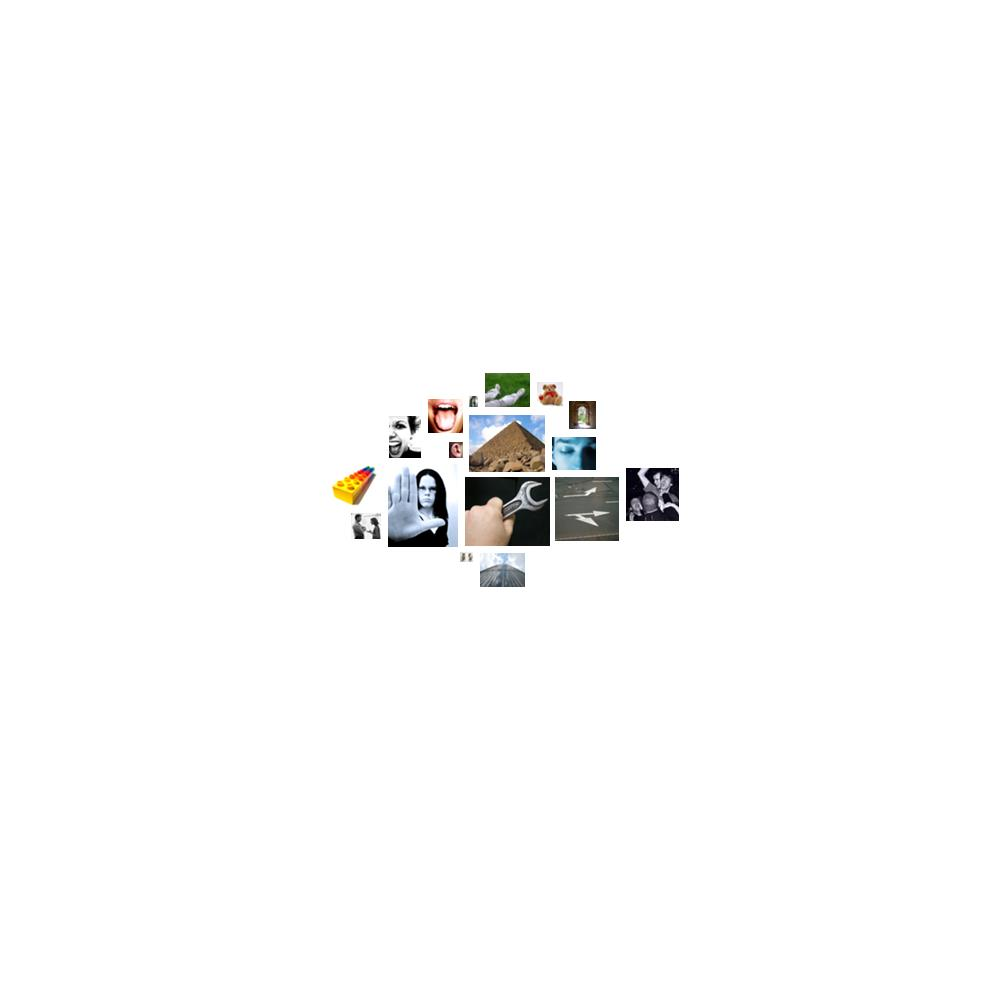

gwbush-polcorpus.txt.html
  instrumental_behavior
instrumental_behavior make, found, goals, reach, build, work, work, make, records, built, making, buying, workers, jobs, build, improve, try, win, reach, founding, work, workers, job, skill, workers, workers, jobs, work, earn, worker, prepared, make, pursue, market, buyers, workers, jobs, business, jobs, spending, making, jobs, make, jobs, trade, sell, business, workers, jobs, effort, workers, find, jobs, workers, skills, job, skills, workers, workers, manufacturing, jobs, business, improve, job, work, workers, business, afford, business, employees, purchase, available, businesses, employees, purchase, workers, jobs, practice, cost, make, affordable, improve, make, working, labor, workplace, build, ownership, ownership, goal, affordable, ownership, workers, workers, build, reach, results, making, record, gainesville, students, tests, finish, making, jobs, students, students, risk, make, performance, effort, find, pay, spending, pay, spending, spend, try, foundation, work, work, make, claim, found, workers, working, succeeding, pursuing, making, record, pursuing, using, use, prepared, make, lessons, make, earned, work, aiming, test, soldiers, job, making, money, work, soldier, work, used, work, successful, use, reach, found, work, occupation, used, build, tried, soldiers, job, soldier, used, burdened, buildings, finds, makes, found, workers, effort, tested, achieve, reached, build, build
 restraint
restraint must, tax, must, tax, must, tax, must, tax, tax, tax, must, tax, tax-free, must, must, policies, must, taxes, control, must, insisting, require, must, policies, penalty, taxes, taxes, policies, tax, policies, requires, must, must, strict, must, determine, determined, prevail, capturing, arrests, detained, requires, must, authorize, refused, must, must, coerced, police, punishment, prisoners, policy
 timelessness
timelessness permanent, forever, century, century, century, century, everlasting
 random_movement
random_movement shaken, expanding, expansion, expand, expanding, expanding, expanded, expanding, expanding
 chaos
chaos ruins, chance, chance, chance, ruins
 concreteness
concreteness within, back, at, side, closest, at, side, forward, where, where, back, back, back, toward, circle, further, here, at, extend, frontiers, outside, side, place, level, across, across, back, distant, at, center, out, side, at, open, away, over, far, where, level, at, across, behind, at, at, place, middle, between, here, far, back, place, place, between, where, where, across, at, here, at, middle, east, point, long, middle, east, middle, east, middle, east, longer, middle, east, toward, place, at, back, where, longer, longer, overwhelmingly, beside, midst, beside, long, off, out, at, middle, east, region, within, across, middle, east, at, center, middle, east, at, central, middle, east, at, where, at, across, ahead, where, here, over, long, here, here, far, at, place, forward
 height
height grow, mountain, hills, spirited, spirit, spirit, growing, growing, growing, higher-paying, higher-level, high, high, spirit, high, high, towers, spirit
 passivity
passivity quiet, died, calm, drift, security, security, security, retirement, security, retirement, security, security, rests, safety, died, security, security, peaceful, slowly, secure, peaceful, silence, safety, security
 consciousness_alteration
consciousness_alteration dreams, imaginative, wake, madman, imaginary, dream, dream, dream
 anxiety
anxiety frightened, worried, worry, afraid, terrorism, terrorists, terrorists, terrorist, terrorist, terror, terrorist, terror, terrorists, terrorists, terrorist, terrorists, terrorists, fear, terrorists, terrorists, fear, afraid, terror, crisis, frightened, alarmed, worry
 taste
taste sources, sources
 social_behavior
social_behavior accept, said, rescuers, share, guides, election, tell, teach, education, responsibility, help, able, protect, help, help, election, commitment, commitment, providing, encourage, dependent, services, protect, help, met, told, allow, offer, encourage, help, met, offer, thanks, able, say, confidence, promise, social, social, social, allowing, call, proposals, help, remind, teacher, say, promise, teachers, help, providing, help, education, commitment, help, grants, help, allow, information, address, education, proposed, promise, responsibility, commitment, protection, announced, say, speech, calling, election, responds, said, protect, responders, protect, services, meet, responsibilities, ask, election, elections, helps, help, elections, speak, service, thanks, proposed, asked, explain, said, said, said, counsel, called, quote, visit, message, message, message, message, message, meets, admit, quote, aid, called, plead, gift, gift, depend, ask, agree, called, thank, told, say, told, met, said, meetings, say, offer, encouragement, say, confirmed, confident, encouraging, calling, confident
 brink-passage
brink-passage hall, frontiers, routine, access, accessible, door, path, path, path, path, line, path, path, road
 affection
affection grateful, kindness, love, lovely, friends, grateful, welcome, marriage, kind, mercy, marriage, marriage, mate, kind, mate, appreciate, like, like, grateful, friend, kind, friends, embrace, goodbye, loved, like, loved, like, grateful
 sound
sound heart, hearts, boom, trillion, heart, resounding, heart, hear, hear, hear, hear, heart, heart
 order
order uniform, normandy, consistent, constantly, systems, systems, simpler, system, simplify, routine, standards, graduation, stability, stability, uniform, stability, form
 anality
anality mess
accept, said, rescuers, share, guides, election, tell, teach, education, responsibility, help, able, protect, help, help, election, commitment, commitment, providing, encourage, dependent, services, protect, help, met, told, allow, offer, encourage, help, met, offer, thanks, able, say, confidence, promise, social, social, social, allowing, call, proposals, help, remind, teacher, say, promise, teachers, help, providing, help, education, commitment, help, grants, help, allow, information, address, education, proposed, promise, responsibility, commitment, protection, announced, say, speech, calling, election, responds, said, protect, responders, protect, services, meet, responsibilities, ask, election, elections, helps, help, elections, speak, service, thanks, proposed, asked, explain, said, said, said, counsel, called, quote, visit, message, message, message, message, message, meets, admit, quote, aid, called, plead, gift, gift, depend, ask, agree, called, thank, told, say, told, met, said, meetings, say, offer, encouragement, say, confirmed, confident, encouraging, calling, confident